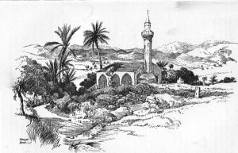

Gaziveren
Tarihsel Önemi: Gaziveren, Kıbrıs tarihinde direnişin sembollerinden biridir. 1964 yılında yaşanan olaylar ve köy halkının gösterdiği kahramanca savunma, köy meydanındaki Gaziveren Şehitler Anıtı ile ölümsüzleştirilmiştir. Sahil şeridinde yer alan bu köy, hem tarımsal üretimi hem de stratejik konumuyla daima önemli bir yerleşim olmuştur.
Doğa ve Tarım: Verimli alüvyon toprakları sayesinde Gaziveren, sebze ve narenciye üretiminde öncüdür. Ancak köyün asıl modern yüzü, uçsuz bucaksız sahil şerididir. Caretta Caretta kaplumbağalarının uğrak noktası olan kumsalları, günümüzde gelişen Kite Surf (Uçurtma Sörfü) okullarıyla spor turizmine açılmıştır.
Günümüzdeki Durumu: Geleneksel köy yaşamı ile modern wellness turizmi burada iç içedir. Sahil boyunca yükselen yeni yaşam merkezleri, bölgeye uluslararası bir kimlik kazandırmış olsa da, köy kahvesindeki samimiyet ve yerel üreticilerin sıcaklığı hala ilk günkü gibi korunmaktadır.
📍 Haritada Git
Gemikonağı (Xeros)
Sanayi Mirası: Gemikonağı, Kıbrıs'ın endüstriyel tarihindeki en önemli limanlardan biridir. 20. yüzyılın başlarında faaliyete geçen CMC (Cyprus Mines Corporation) maden şirketi, burayı dünyaya bakır ihraç eden bir merkez haline getirmiştir. Denizin içine uzanan paslı ama heybetli CMC iskelesi, o günlerin sessiz bir tanığı olarak hala ayaktadır.
Eğitim ve Yaşam: Günümüzde Gemikonağı, Lefke Avrupa Üniversitesi (LAÜ) kampüsüne ev sahipliği yapmasıyla "Öğrenci Kenti" kimliği kazanmıştır. Sahil boyunca uzanan palmiye ağaçları, yürüyüş yolları, kafeler ve restoranlar, bölgeyi 7/24 yaşayan dinamik bir merkeze dönüştürmüştür.
Gezilecek Yerler: Karadağ'ın eteklerinden denize uzanan bu kasaba, Antik Soli Kenti'ne giden yolun başlangıcıdır. Gün batımında iskele çevresinde yürümek, balıkçı barınağında taze balık yemek ve tarihi İngiliz dönemi gümrük binalarını incelemek ziyaretçiler için vazgeçilmezdir.
📍 Haritada Git
Yeşilırmak (Limnitis)
Kıbrıs'ın Meyve Bahçesi: Adanın en batı ucunda, Dillirga bölgesinin kapısı olan Yeşilırmak, dağların denize dik indiği muazzam bir coğrafyaya sahiptir. Özel mikrokliması sayesinde muzdan çileğe, kolokastan verigo üzümüne kadar her şey burada yetişir. "Yeşilırmak Çileği" bir marka haline gelmiştir.
Rekorlar Kitabı: Köy, Guinness Rekorlar Kitabı'na giren devasa asmasıyla ünlüdür. Bu asma tek bir kökten çıkarak geniş bir alanı gölgelemekte ve tonlarca üzüm vermektedir. Köy halkı, organik tarımı bir yaşam felsefesi olarak benimsemiştir.
Turizm Potansiyeli: Vuni Sarayı'nın hemen yamacında yer alması, Petra Tou Limnidi (Yeşilırmak Kayalığı) adacığına bakan koyu ve tertemiz deniziyle yaz aylarının gözdesidir. Köy, Cittaslow (Sakin Şehir) ruhunu taşıyan, doğayla barışık işletmeleriyle bilinir.
📍 Haritada Git
Yeşilyurt (Pendaya)
Narenciye Başkenti: Yeşilyurt, ismini aldığı yeşil dokusunu, etrafını saran binlerce dönümlük portakal, limon ve mandalina bahçelerine borçludur. Kıbrıs'ın en büyük narenciye ihracat merkezlerinden biri olan köy, bahar aylarında tüm sokaklarını saran çiçek kokularıyla büyüleyicidir.
Tarihi Doku: Köyde Osmanlı ve İngiliz mimarisinin izlerini taşıyan yapılar bulunur. Özellikle İngiliz Sömürge Dönemi'nden kalma eski tren istasyonu yapıları ve su dağıtım sistemleri dikkat çeker. Köyün hemen yakınındaki "Mavi Köşk" (Kaçakçının Köşkü), turistlerin bölgeye gelmesindeki en büyük etkenlerden biridir.
Sosyal Yaşam: Geniş caddeleri ve düzenli yerleşimiyle dikkat çeken Yeşilyurt, sakin ve huzurlu bir yaşam sunar. Cengiz Topel Hastanesi'nin de bu bölgede bulunması, köyü Lefke bölgesinin sağlık merkezi konumuna getirmiştir.
📍 Haritada Git
Doğancı (Elye)
Üretimin Kalbi: Eski adıyla Elye olarak bilinen Doğancı, Lefke bölgesinin en geniş düzlüklerine sahiptir. Bu coğrafi avantaj, onu Kıbrıs'ın "karpuz ve sebze deposu" yapmıştır. Her yıl düzenlenen "Doğancı Karpuz Festivali", köyün kültürel mirasını ve üretim gücünü sergileyen büyük bir şölendir.
Mimari ve Kültür: Doğancı, kerpiç mimarinin en güzel örneklerinin görülebileceği, geniş avlulu evleriyle ünlüdür. Köy sınırları içerisinde yer alan tarihi Roma dönemi su kemerleri, bölgenin binlerce yıldır tarım merkezi olduğunun kanıtıdır.
Doğa: Elye Göleti, özellikle kış ve bahar aylarında göçmen kuşlara ev sahipliği yapar. Köy meydanındaki asırlık ağaçların altında içilen kahve ve köy halkının misafirperverliği, burayı ziyaret edenlerin hafızasında yer eder.
📍 Haritada Git
Taşpınar (Angolemi)
Dağın Eteğindeki Huzur: Taşpınar, Lefke'nin güneyindeki dağ yamaçlarına sırtını yaslamış, sakinliği ve temiz havasıyla bilinen bir köydür. Eski adı Angolemi olan köy, Lüzinyan döneminden kalma isminin köklü geçmişini taşır. Konumu itibariyle Lefke ovasına hakim bir manzarası vardır.
El Sanatları: Taşpınar, Kıbrıs kültürünün önemli bir parçası olan dokumacılık ve el işçiliğinin yaşatıldığı nadir yerlerdendir. Köy kadınlarının ürettiği geleneksel motifli el işleri, kültürel mirasın devamlılığını sağlar.
Ekoloji: Köy çevresi, çam ormanları ve maki bitki örtüsüyle kaplıdır. Doğa yürüyüşçüleri için harika rotalar sunan Taşpınar, özellikle bahar aylarında açan siklamenler ve lalelerle renk cümbüşüne döner. Şehir gürültüsünden uzaklaşmak isteyenler için mükemmel bir kaçış noktasıdır.
📍 Haritada Git
Bağlıköy (Ampeligu)
Tescilli Eko-Köy: Bağlıköy, Kıbrıs'ın ilk ve en önemli Eko-Köy projelerinden biridir. Adını bir zamanlar etrafını saran üzüm bağlarından alan (Ampeligu) köy, bugün restore edilen taş binaları, butik konaklama yerleri ve çiçeklerle süslü dar sokaklarıyla adeta bir açık hava müzesidir.
Kültürel Etkinlikler: Bağlıköy Ekoloji Derneği tarafından düzenlenen "Eko Günler", köyün geleneksel ürünlerinin (paluze, sucuk, zivaniya, hellim) tanıtıldığı ve satışa sunulduğu önemli etkinliklerdir. Köy, sürdürülebilir turizmin Kıbrıs'taki öncüsüdür.
Doğa ve Tarih: Köyün üst kısımlarında yer alan manastır kalıntıları ve doğa yürüyüş parkurları, ziyaretçilere hem tarihi keşif hem de spor imkanı sunar. Kuş gözlemciliği için de uygun olan bölge, endemik bitki türleri açısından oldukça zengindir.
📍 Haritada Git
Çamlıköy
Su ve Orman: Lefke Barajı'nın hemen kıyısında yer alan Çamlıköy, adını bölgeyi kucaklayan çam ormanlarından alır. Suyun bereketi, köyün tarımsal verimliliğini artırmış ve köyü her daim yeşil kılmıştır. Baraj gölü manzarası, köye ayrı bir dinginlik katar.
Tarihi Değirmenler: Bölgedeki su kaynaklarının bolluğu, geçmişte birçok su değirmeninin burada kurulmasını sağlamıştır. Bu değirmenlerin kalıntıları, köyün endüstriyel arkeolojisi açısından önemlidir. Ayrıca köyde bulunan Osmanlı ve İngiliz dönemi su kemerleri de görülmeye değerdir.
Yaşam Tarzı: Çamlıköy, geleneksel Kıbrıs köy yaşamının modern olanaklarla harmanlandığı sakin bir yerleşimdir. Köy halkı, organik sebze yetiştiriciliği ve hayvancılıkla uğraşır. Baraj çevresindeki piknik alanları, hafta sonları doğaseverlerin uğrak noktasıdır.
📍 Haritada Git